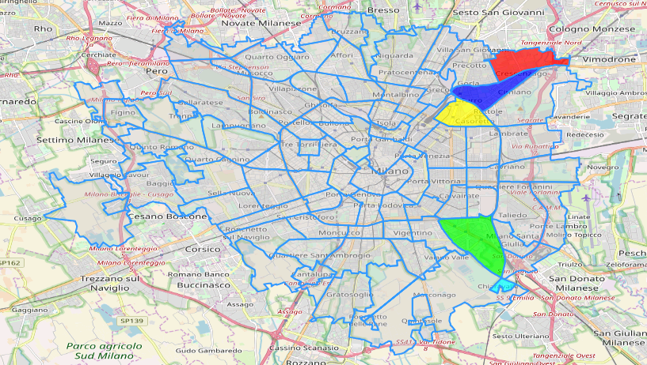
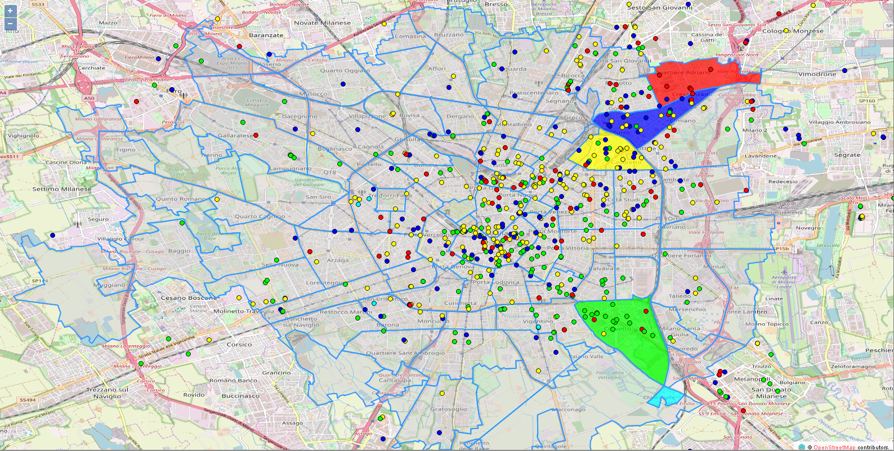
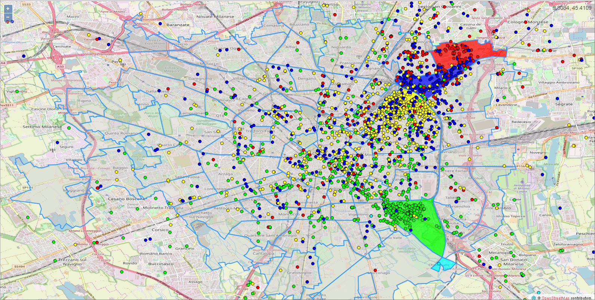
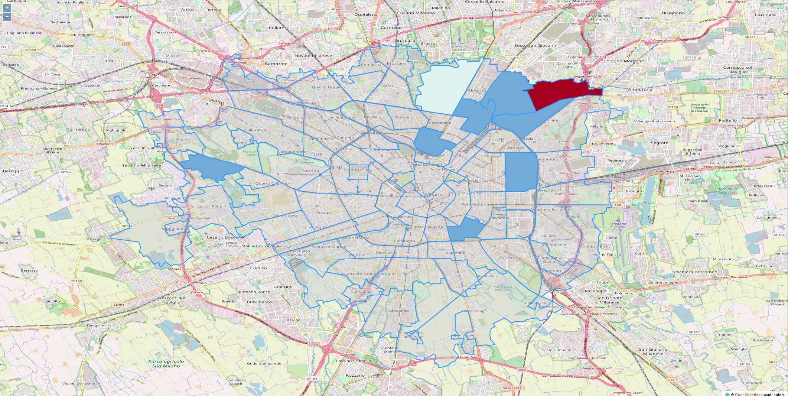
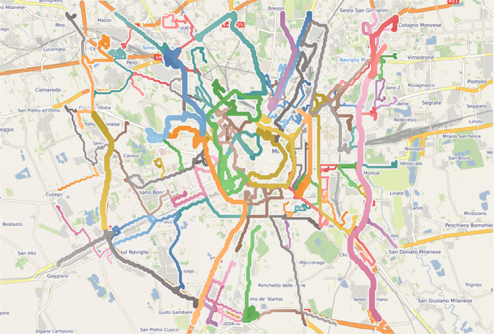
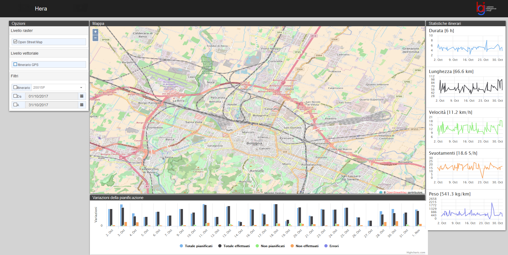
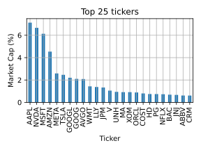
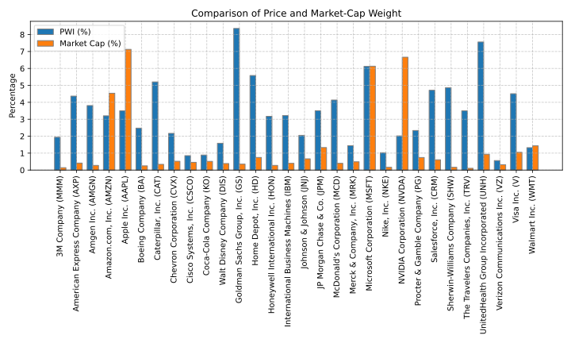
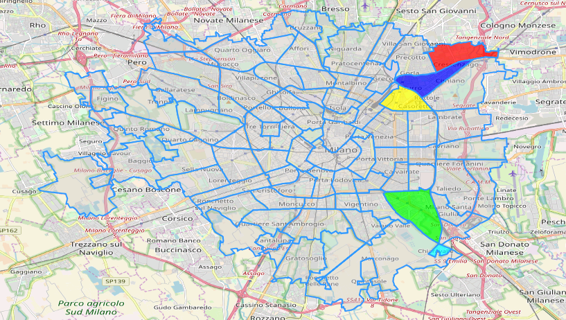

Machine Learning and Data Mining (Module 2)
Business understanding
Matteo Francia
DISI — University of Bologna
m.francia@unibo.it
Business Understanding
(Perhaps the most important/hard phase of any data mining project (Shearer 2000))
The business understanding phase focuses on
- Determining the business objectives
- Assessing the context of the analysis
- Determining and translating objectives into data mining goals
- Producing the project plan
It is essential to understand which data should later be analyzed and how
 Business Understanding: Brown Spot
Business Understanding: Brown Spot
Brown spot of European Pear
Brown spot of European Pear
- A company wants to track the spreading of the Brown spot of European pear in Emilia Romagna.
- Brown spots are caused by a fungus (Stemphylium vesicarium) damaging pear fruits and causing economic loss for producers.
- Also, the company wants to find out if there are environmental factors related to the spreading of such fungus and the level of damage.
How would you address this problem?
Determine the Business Objectives
Ideally, the goal is to build a dataset such as the following
| Field#1 |
14 |
Close distance |
… |
High |
| Field#2 |
14.5 |
Medium distance |
… |
Medium |
| Field#3 |
13.8 |
Medium distance |
… |
Low |
| Field#4 |
… |
… |
… |
… |
and to learn relationships between environmental features and Level of Damage (the target of the analysis).
- What features would you collect?
- How do we translate this problem into a quantitative metric?
Determine the Data Mining Goal
Ideally, the goal is to build a dataset such as the following
| Field#1 |
14 |
Close distance |
… |
High |
| Field#2 |
14.5 |
Medium distance |
… |
Medium |
| Field#3 |
13.8 |
Medium distance |
… |
Low |
| Field#4 |
… |
… |
… |
… |
and to learn relationships between environmental features and Level of Damage (the target of the analysis).
In other words, can we identify features that allows us to predict an accurate level of damage?
Metrics: predict the level of damage with high accuracy
- How would you define accuracy?
Determine the Data Mining Goal
Ideally, the goal is to build a dataset such as the following
| Field#1 |
14 |
Close distance |
… |
High |
| Field#2 |
14.5 |
Medium distance |
… |
Medium |
| Field#3 |
13.8 |
Medium distance |
… |
Low |
| Field#4 |
… |
… |
… |
… |
and to learn relationships between environmental features and Level of Damage (the target of the analysis).
In other words, can we identify features that allows us to predict an accurate level of damage?
How can we collect the data?
Assess the Situation: how can we collect the data?
The company prepares a questionnaire on paper with around 100 questions, and one of the employees moves across Emilia-Romagna to ask questions to the farmers and collect their answers.

Emilia Romagna, Italy
What are the pros/cons of this solution?
Once the employee had collected almost 100 questionnaires, the company asked us to apply machine learning techniques to understand which environmental conditions could be related to the spreading of the fungus.
If you were the analyst, what would you do?
If you were the analyst, what would you do?
To us, it was impossible to apply machine learning techniques to data on paper.
We prepared a Google Form where answers could be digitalized.
The employee would take ~1 month to return the digitalized questionnaires.
Issue #1: some answers were inconsistent with the provided options.
Issue #2: what about open questions?
Issue #3: what about the trustworthiness of the data? E.g., there are some pesticides/fertilizers whose application is constrained by Italian/European laws. Can we trust the answers to these questions?
Issue #4: we have a dataset of 100 features (assuming for simplicity that each question can be simply turned into an attribute), and a dataset of 100 data.
Outcome
- This project was missing a proper plan (business+data understanding), and turned out to be a failure for the company.
- Even if we apply ML techniques to the data, the results we would get are not statistically relevant.
End of the case study
Back to CRISP-DM: Business understanding
Determine the Business Objectives
Understanding a client’s true goal is critical to uncovering the important factors involved in the project
- Data analysts must uncover the primary business objective as well as the related questions the business would like to address
- Ensure that the project does not produce the right answers to the wrong questions
- Beware of setting unattainable goals
- Make sure that each success criterion relates to at least one of the specified business objectives
The business goal could be to retain current customers by predicting when they are prone to move to a competitor
- “How does the primary channel (e.g., ATM, branch visit, Internet) of a bank customer affect whether they stay or go?”
- “Will lower ATM fees significantly reduce the number of high-value customers who leave?”
Assess the Situation
Outline the available resources to accomplish the data mining project, from personnel to software
- Discover what data is available to meet the primary business goal
- Do you have data that’s relevant to the question?
- Do you have measures of the target and features that are related to the target?
- Do you have an accurate measure of your model target and the features of interest?
- An existing system might not have the data it needs to address a problem and achieve a project goal
- Find external data sources or update your systems to collect new data
To address the business question, a minimum number of customers over age 50 is necessary
- List the project risks and potential solutions to those risks
- List the assumptions made in the project
- Create a glossary of business and data mining terms
- This is essential in interdisciplinary teams!
- Construct a cost-benefit analysis for the project
Things are more complex in a company (this is the added value of DTM!)
Determine the Organizational Structure
- Identify key individuals in the organization (also to provide domain expertise)
- Identify business units that will be affected by the data mining project
Describe Problem Area
- Identify the problem area, such as marketing, customer care, or business development.
- Describe the problem in general terms
- Clarify the prerequisites of the project
- What are the motivations behind the project?
- Does the business already use data mining?
- Check on the status of the data mining project within the business group
- Has the effort been approved, or does data mining need to be “advertised” as a key technology for the business group?
- If necessary, prepare informational presentations on data mining for your organization
Describe Current Solution
- Describe any solutions currently used to address the business problem
- Describe the advantages and disadvantages of the current solution
Determine the Data Mining Goals
Formulate project objectives in business terms
Ask and refine sharp questions that are relevant, specific, and unambiguous.
- Data science is a process that uses numbers to answer such questions
- You typically use data science or machine learning to answer five types of questions
- How much or how many? (regression)
- Which category? (classification)
- Which group? (clustering)
- Is this unusual? (anomaly detection)
- Which option should be taken? (recommendation)
The metrics must be SMART:
- Specific
- Measurable
- Achievable
- Relevant
- Time-bound
If the business goal cannot be effectively translated into a data mining goal, it may be wise to consider redefining the problem
Success may be measured by reducing lost customers by 10% or by achieving a better understanding of the customer base
Success should also be defined in these terms, such as achieving a certain level of predictive accuracy
Produce a Project Plan
Describe the intended plan for achieving the goals, including:
- outlining specific steps and a proposed timeline
- an assessment of potential risks
- and an initial assessment of the tools and techniques needed to support the project
Generally accepted industry timeline standards are (Shearer 2000):
- 50 to 70 percent of the time and effort in a data mining project involves the Data Preparation Phase;
- 20 to 30 percent involves the Data Understanding Phase;
- only 10 to 20 percent is spent in each of the Modeling, Evaluation, and Business Understanding Phases;
- and 5 to 10 percent is spent in the Deployment Planning Phase.
Special Mention: Interdisciplinarity
Identifying and delving into the problem to solve
- Is an interdisciplinary phase
- Even if you have good knowledge in the fields of computer and data science…
- … maybe you still miss domain knowledge that is fundamental to understanding and modeling the problem
Business Understanding: Personal Gazetteer
Social Habits: La Città Intorno
Lacittàintorno is a programme for urban regeneration promoted by Fondazione Cariplo
- Designed to foster well-being and quality of life in urban areas
- Enhancing the functions and services in place in the following target neighbourhoods: Adriano, Via Padova, Corvetto, and Chiaravalle
- 10 million euros investment over a three-year timeframe
Neighborhoods of Milan (NIL)
Question: what is the profile of users in these neighborhoods?
Location Intelligence and Mobility Data
More than 80% of companies take decisions on the basis of information characterized by a spatial component.
- Geo-referenced data: are data that contain a spatial position, they are typically static
- Trajectory data: describe objects moving in the environment
- The main providers of trajectory data are:
- Apps collecting data from GPS
- Telco that trace connection to Base Transceiver Stations
- Fleets of trucks, cars and ships
- …
Location Intelligence is a set of tools that allow a geographic dimension to be integrated within a BI platform.
- The goal is to increase the monitoring ability and the capability of understanding business events.
- Location intelligence supports data visualization and interaction with maps in BI contexts.
How do you identify relevant places?
Personal gazetteer is a personalized, digital record of significant locations (stay points) to an individual, similar to a geographical fingerprint
- Staypoints are places of interest for a user
- How can extract staypoints with the following semantics?
- Frequented places?
- Home?
- Work?
How do you identify relevant places?
Staypoints vs Trajectories
- Trajectories describe mobility behaviors/patterns
- USE CASE: understand where people going to an event come from?
- Frequent trajectories: an end-to-end cluster of trajectories that are:
- Compact enough
- Frequent enough
- Long enough
- Staypoints identify places of interest for a user
- Home: the place where a user frequently stops between 1 and 5
- Work: the place where a user frequently stops between 9 and 17
- Attend: a place where the user stands at least 20 minutes and where at least one commercial activity is situated
Social Habits: LiveIn vs WorksIn
Colors are assigned according to the LiveIn semantic
Social Habits: LiveIn vs Attend
Colors are assigned according to the LiveIn semantic
Social Habits: LivesIn Adriano vs WorksIn *

Heatmap
Social Habits: LivesIn * vs WorksIn Adriano
Heatmap
The previous figures provide qualitative results.
- How can we quantitatively measure the attractiveness of neighborhood?
- \(Attractiveness(n) = \frac{LiveIn_n + WorkIn_n + Frequent_n}{LiveIn_n}\)
- \(Attractiveness'(n) = \frac{MovementPattern_n}{\sum_i (MovementPattern_i)}\)
| Brera |
2779 |
2396 |
440 |
545% |
83% |
| Duomo |
4607 |
4203 |
464 |
906% |
83% |
| Buenos Aires - Venezia |
3840 |
2644 |
1484 |
178% |
82% |
| XXII Marzo |
1790 |
1202 |
681 |
177% |
82% |
| … |
… |
… |
… |
… |
… |
| Gallaratese |
1508 |
929 |
752 |
124% |
5% |
| Lodi - Corvetto |
1627 |
993 |
795 |
125% |
4% |
| Padova |
1628 |
996 |
753 |
132% |
3% |
| Adriano |
636 |
316 |
385 |
82% |
1% |
Exploitation of Trajectory Data
- Social habits and behaviors
- Identify relevant places
- Identify communities
- Urban mobility optimization
- Historical analysis of traffic flows
- Early identification of accidents
- Dynamic and real-time traffic management
- Car pooling
- Mobility/Movement mining identification of the mode of transport (car/foot) along a trajectory
- Reverse geocoding it is the process by which an address or the name of a place is associated with a spatial datum (latitude, longitude)
- Layer integration it is the process by which several information layers are superimposed and interrogated
- Proximity marketing (indoor)
- … and many others
Social habits and behaviors: Ubiquitous User Profiling – Reality Mining
Create a synthetic profile of the community that transits at a point / place starting from anonymous trajectory data
Who are the customers of the shopping center?
- 50% live within 5km from the shopping center
- 20% attend the shopping center X too
- On Saturday, 20% of customers go to the cinema after being at the shopping center
- On Saturday, 30% of customers go to restaurant Y after being at the shopping center
Who comes on vacation to Cesenatico?
- In July 70% of the customers come from Emilia Romagna
- 27% of customers live in neighborhoods with an average income above 30K €
- In August, 25% of customers come from Milan
- 40% of the tourists have children
How do the people who use the Freccia Rossa Milan-Rome behave?
- 30%, once in Rome, moves less than 10km from the station
- 20%, once in Rome, take the subway
Urban mobility optimization: traffic flows
Flow: is defined by a sequence of overlapping trajectories that are not necessarily end-to-end compact
Top flows
Urban mobility optimization: traffic flows
Flow: is defined by a sequence of overlapping trajectories that are not necessarily end-to-end compact
USE CASE: identify crowded routes
Urban mobility optimization: garbage collection paths for HERA
Overall statistics
Urban mobility optimization: garbage collection paths for HERA

Trips of a single truck
Case Study: Stocks
The Standard and Poor’s 500 index tracks the stock performance of 500 of the largest companies in the United States.
Top 25 company from the S&P 500 index
- Companies issue stocks that are bought by investors; the number of stocks is called shares outstanding
- Shares outstanding are shares of a corporation that have been purchased by investors and are held by them
- Stocks are traded daily in the stock market
- Volume is the number of shares that are traded daily
- Close and Open are closing/opening prices of daily trades
How would you define the weight of a company in the index?
Case Study: Stocks
As a semplification, given a company \(C\) and a generic index \(I\)
Market cap weight (e.g., S&P 500)
- \(\text{MarketCap(C)} = \text{SharesOut(C)} \times \text{StockPrice(C)}\)
- \(\text{MarketCapWeight(C)} = \frac{\text{MarketCap(C)}}{\sum_{C' \in I} \text{MarketCap(C')}}\)
Price weight index (e.g., Dow Jones Industrial Average)
- \(\text{PriceWeight(C)} = \frac{\text{StockPrice(C)}}{\sum_{C' \in I} \text{StockPrice(C')}}\)
Given a few companies such as
| AMZN |
222.13 |
1.0515e+10 |
3.20253 |
4.53745 |
| AAPL |
242.7 |
1.51158e+10 |
3.4991 |
7.12683 |
| GS |
580.02 |
3.1391e+08 |
8.36237 |
0.353707 |
| MSFT |
424.56 |
7.43488e+09 |
6.12105 |
6.13209 |
| NVDA |
140.11 |
2.449e+10 |
2.02002 |
6.66582 |
What is their impact on DJIA and S&P?
Case Study: Stocks
Price vs market cap weighted
Business Understanding: Sport KPIs
Training KPIs

Lucy Charles-Barclay Wins Ironman 70.3 World Championship (2021)
We are preparing for a race and we need to create a proper plan.
Risks of Poor Planning:
- Overtraining
- Underperformance
- Increased risk of injury
How can we exploit data-driven planning?
Training KPIs
Key Performance Indicators (KPIs) are measurable values that track performance and progress toward a goal.
- Objectively measure improvements
- Balance training intensity and recovery
- Prevent overtraining or undertraining
We need to optimize performance readiness: achieved when fitness is high, and fatigue is low
- We need to minimize fatigue (i.e., short-term stress from recent training)
- Maximize the fitness (i.e., long-term training adaptations)
How can we quantify all these aspects?
Training Load
Training Load (\(TL\)): a measure of the stress placed on the body during exercise.
- \(TL = Duration \times Intensity\)
- Units: \(TSS\) (Training Stress Score)
How do we quantify Intensity?
How do we quantify Intensity?
Let’s focus on a specific sport, cyclism
- We can measure the current rider’s effort (= power) using power meters

Power meters
Cycling power meters measure torque using strain gauges.
- The strain gauges measure a rider’s force on a given component (pedal, crank, etc.).
- This torque is later converted to power by multiplying it by that component’s cadence (angular velocity).
Normalized Power
Normalized Power \(\text{NP} = \sqrt[4]{\frac{\sum_{i=1}^{n} P_{\text{30-sec}, i}^4}{n}}\) quantifies the physiological demands of a cycling activity with variable intensity.
Divide the ride into 30-second moving average and calculate the average power for every 30-second interval.
- Smooth out short-term power fluctuations.
Raise each 30-second average to the fourth power
- Emphasize higher power outputs, as intense efforts contribute disproportionately to physiological stress.
Take the average of all fourth powers
Take the fourth root of the Result
Normalized Power
Unlike average power, NP accounts for the variability in effort during a ride, reflecting how the body responds to the stress.
- High-intensity intervals are more stressful than steady-state efforts, even if the average power is the same.
| … |
… |
… |
… |
| 2285 |
28 |
242 |
130 |
| 2313 |
32 |
103 |
134 |
| 2345 |
27 |
253 |
135 |
| 2372 |
32 |
97 |
136 |
| 2404 |
28 |
278 |
139 |
| 2432 |
32 |
104 |
147 |
| 2464 |
28 |
290 |
145 |
| 2492 |
71 |
107 |
140 |
| … |
… |
… |
… |
Given the 8 intervals from the table
- Average power = 184
- Normalized power = 226
Towards Intensity
Is \(NP=200W\) a hard or an easy ride?

Easy ride for Mathieu van der Poel (from Strava), impossible ride for me
The Normalized Power is an absolute measurement.
- Absolute measurements provide information on volume, size, or magnitude.
- Relative measurements provide a comparative gauge of how well the work has been executed.
Intensity Factor
Intensity Factor \(IF = \frac{\text{Normalized Power (NP)}}{\text{FTP}}\) measures workout intensity relative to the Functional Threshold Power (\(FTP\)).
\(FTP\): the highest average power (measured in watts with sensors) a cyclist can sustain for 60 minutes.
- Testing Methods:
- 20-minute time trial: \(FTP = 95\%\) of average power.
- Ramp or step tests with smart trainers.
\(IF\) ranges:
- Easy recovery: \(IF < 0.65\)
- Moderate endurance: \(IF \in [0.65, 0.85]\)
- High-intensity intervals: \(IF > 0.85\)
Use \(IF\) to adjust the training load:
- Too high = risk of overtraining.
- Too low = insufficient stimulus for improvement.
Now that we have defined the Training Load, what about Fitness and Fatigue?
Key Problems in quantification:
- Subjectivity: Perceived exertion varies by individual.
- External Factors: Sleep, nutrition, and stress influence fatigue but are hard to measure precisely.
- Delayed Effects: Fatigue may appear days after intense training.
- How do we distinguish Fatigue from Fitness?
- As of today, yesterday’s activity provokes fatigue but will increase fitness in the long run
Quantifying Fatigue: Acute Training Load
Acute Training Load \(ATL = \frac{\text{Sum of daily TL over 7 days}}{7}\)
- Short-term training stress, typically measured over the past 7 days.
- Reflects recent training intensity and fatigue.
Quantifying Fitness: Chronic Training Load
Chronic Training Load \(CTL = \frac{\text{Sum of daily TL over 42 days}}{42}\)
- Long-term training stress, measured over the past 42 days.
- Reflects the overall fitness level.
End of the case study
Back to CRISP-DM: Business understanding


Social Habits: La Città Intorno
Lacittàintorno is a programme for urban regeneration promoted by Fondazione Cariplo
- Designed to foster well-being and quality of life in urban areas
- Enhancing the functions and services in place in the following target neighbourhoods: Adriano, Via Padova, Corvetto, and Chiaravalle
- 10 million euros investment over a three-year timeframe
Neighborhoods of Milan (NIL)
Question: what is the profile of users in these neighborhoods?